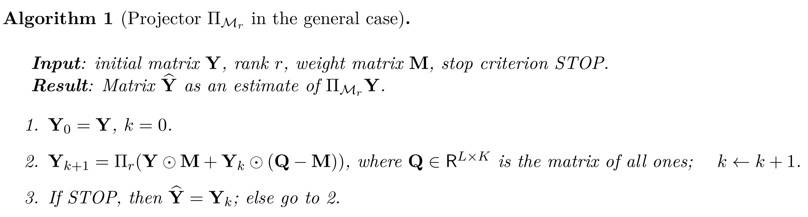
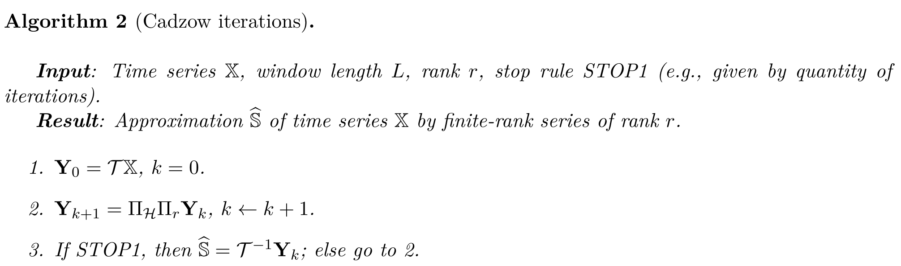
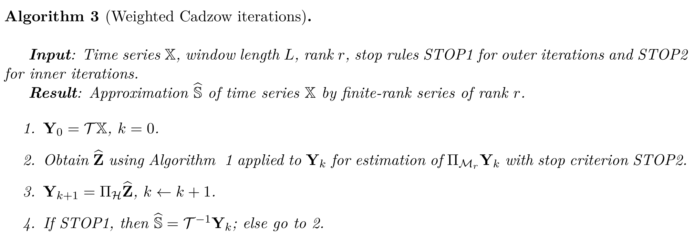
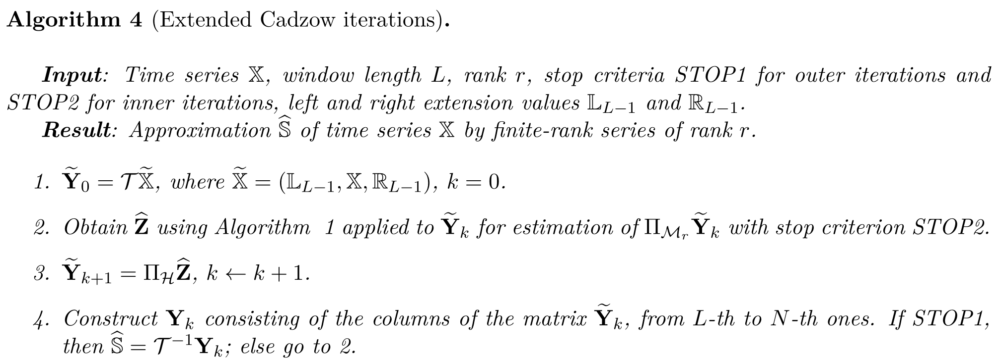
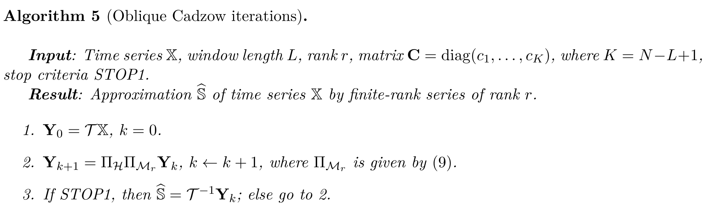

写在前面 前面综述里遇到了一个Cadzow迭代法，是用来解决低秩Hankel矩阵近似问题的著名算法，原文是1988年的，现在衍生出了一些变体。下面借助文献介绍Cadzow迭代，当然还是在奇异谱分析领域下的。
线性递推关系 源信号S = ( s 1 , … , s N ) \mathbb S~=~(s_1, \ldots, s_N) S = ( s 1 , … , s N )
s n = ∑ i = 1 r a i s n − i , n = r + 1 , … , N ; a r ≠ 0. s_n = \sum_{i = 1}^{r} a_i s_{n-i}, \quad n = r + 1, \ldots, N;\ a_r\neq 0.
s n = i = 1 ∑ r a i s n − i , n = r + 1 , … , N ; a r = 0 .
上式也可表示成参数形式
s n = ∑ i P i ( n ) exp ( α i n ) cos ( 2 π ω i n + ψ i ) , s_n = \sum_i P_i(n) \exp(\alpha_i n) \cos(2 \pi \omega_i n + \psi_i),
s n = i ∑ P i ( n ) exp ( α i n ) cos ( 2 π ω i n + ψ i ) ,
其中P i ( n ) P_i(n) P i ( n ) n n n
去噪问题，即从观察信号X = S + N \mathbb X = \mathbb S + \mathbb N X = S + N S \mathbb S S L L L
S = ( s 1 s 2 … s K s 2 s 3 … s K + 1 ⋮ ⋮ ⋮ ⋮ s L s L + 1 … s N ) ∈ H \mathbf S = \begin{pmatrix}
s_1 & s_2 & \ldots & s_K \\
s_2 & s_3 & \ldots & s_{K + 1} \\
\vdots & \vdots & \vdots & \vdots \\
s_L & s_{L + 1} & \ldots & s_N
\end{pmatrix}\in \mathcal H
S = ⎝ ⎜ ⎜ ⎜ ⎜ ⎛ s 1 s 2 ⋮ s L s 2 s 3 ⋮ s L + 1 … … ⋮ … s K s K + 1 ⋮ s N ⎠ ⎟ ⎟ ⎟ ⎟ ⎞ ∈ H
若信号S \mathbb S S r r r rank ( S ) = r \text{rank} (\mathbf S) = r rank ( S ) = r S \mathbf S S α i \alpha_i α i ω i \omega_i ω i
近似问题 令X \mathbf X X X \mathbb X X r r r
min rank（ Y ） ≤ r Y ∈ H ∥ X − Y ∥ F 2 \min_{\substack{\text{rank}（\mathbf Y） \le r \\ \mathbf Y \in \mathcal H}}\|\mathbf X - \mathbf Y\|^2_\mathrm F
rank （ Y ） ≤ r Y ∈ H min ∥ X − Y ∥ F 2
该问题是一类结构化低秩近似问题。Cadzow迭代法由Hankel矩阵空间和秩不大于r r r
min Y : rank ( Y ) ≤ r Y ∈ H ∑ i = 1 N w i ( x i − y i ) 2 \min_{\substack{\mathbb Y: \text{rank}(\mathbf Y) \le r \\ \mathbf Y \in \mathcal H}}\sum_{i = 1}^N w_i(x_i - y_i)^2
Y : rank ( Y ) ≤ r Y ∈ H min i = 1 ∑ N w i ( x i − y i ) 2
其中Y \mathbf Y Y Y \mathbb Y Y
w i = { i for i = 1 , … , L − 1 , L for i = L , … , K , N − i + 1 for i = K + 1 , … , N , w_i = \begin{cases}
i & \text{for $i = 1, \ldots, L-1,$}\\
L & \text{for $i = L, \ldots, K,$}\\
N - i + 1 & \text{for $i = K + 1, \ldots, N$}
\end{cases},
w i = ⎩ ⎪ ⎪ ⎨ ⎪ ⎪ ⎧ i L N − i + 1 for i = 1 , … , L − 1 , for i = L , … , K , for i = K + 1 , … , N ,
迭代的常规步骤 Hilbert空间X \mathsf X X ⟨ ⋅ , ⋅ ⟩ \langle \cdot, \cdot \rangle ⟨ ⋅ , ⋅ ⟩ H \mathcal H H X \mathsf X X M \mathcal M M ∀ α , ∃ z ∈ M ⇒ α z ∈ M \forall\alpha,\exists\mathbf z \in \mathcal M\Rightarrow\alpha \mathbf z\in \mathcal M ∀ α , ∃ z ∈ M ⇒ α z ∈ M M \mathcal M M x \mathbf x x H ∩ M \mathcal H~ \cap~\mathcal M H ∩ M
min y ∈ H ∩ M ∥ x − y ∥ \min_{\mathbf y \in \mathcal H \cap \mathcal M}\|\mathbf x - \mathbf y\|
y ∈ H ∩ M min ∥ x − y ∥
设到H \mathcal H H M \mathcal M M Π H \Pi_{\mathcal H} Π H Π M \Pi_{\mathcal M} Π M Π M \Pi_{\mathcal M} Π M ∀ x ∈ X \forall\mathbf x \in \mathsf X ∀ x ∈ X ∥ x ∥ 2 = ∥ x − Π M x ∥ 2 + ∥ Π M x ∥ 2 \|\mathbf x\|^2~=~\|\mathbf x~-~\Pi_\mathcal M \mathbf x\|^2~+~\|\Pi_\mathcal M \mathbf x\|^2 ∥ x ∥ 2 = ∥ x − Π M x ∥ 2 + ∥ Π M x ∥ 2
下面回到用于求解投影问题的交替投影迭代法
y k + 1 = Π H Π M y k , where y 0 = x . \mathbf y_{k+1}=\Pi_\mathcal H \Pi_{\mathcal M} \mathbf y_{k}, \quad\text{where}\quad \mathbf y_{0}=\mathbf x.
y k + 1 = Π H Π M y k , where y 0 = x .
收敛结论
当k → + ∞ k \to +\infty k → + ∞ ∥ y k − Π M y k ∥ → 0 , ∥ Π M y k − y k + 1 ∥ → 0 \|\mathbf y_k - \Pi_{\mathcal M}\mathbf y_k\| \to 0, \|\Pi_{\mathcal M}\mathbf y_k - \mathbf y_{k+1}\| \to 0 ∥ y k − Π M y k ∥ → 0 , ∥ Π M y k − y k + 1 ∥ → 0
记闭球B 1 = { z : ∥ z ∥ ≤ 1 } B_1=\{\mathbf z: \|\mathbf z\|~\le~1\} B 1 = { z : ∥ z ∥ ≤ 1 } M ∩ B 1 \mathcal M \cap B_1 M ∩ B 1 y i 1 , y i 2 , … \mathbf y_{i_1}, \mathbf y_{i_2}, \ldots y i 1 , y i 2 , … y ∗ ∈ M ∩ H \mathbf y^*\in\mathcal M \cap \mathcal H y ∗ ∈ M ∩ H
∥ y k − Π M y k ∥ ≥ ∥ Π M y k − y k + 1 ∥ ≥ ∥ y k + 1 − Π M y k + 1 ∥ . \|\mathbf y_k - \Pi_{\mathcal M} \mathbf y_k\| \ge \|\Pi_{\mathcal M} \mathbf y_k - \mathbf y_{k + 1}\|\ge \|\mathbf y_{k+1} - \Pi_{\mathcal M} \mathbf y_{k + 1}\|.
∥ y k − Π M y k ∥ ≥ ∥ Π M y k − y k + 1 ∥ ≥ ∥ y k + 1 − Π M y k + 1 ∥ .
下面用这一步骤应用至降秩Hankel矩阵的近似问题。令X = R L × K \mathsf X = \mathbb R^{L\times K} X = R L × K H ⊂ R L × K \mathcal H \subset \mathbb R^{L\times K} H ⊂ R L × K r r r M = M r ⊂ R L × K \mathcal M = \mathcal M_r\subset \mathbb R^{L\times K} M = M r ⊂ R L × K
Y k + 1 = Π H Π M r Y k , where Y 0 = X ∈ R L × K . \mathbf Y_{k+1}=\Pi_\mathcal H \Pi_{\mathcal M_r} \mathbf Y_{k},\quad\text{where}\quad\mathbf Y_{0}=\mathbf X \in \mathbb R^{L\times K}.
Y k + 1 = Π H Π M r Y k , where Y 0 = X ∈ R L × K .
投影的表达形式 首先引入加权范数，用非负权矩阵定义加权F范数
⟨ Y , Z ⟩ M = ∑ l = 1 L ∑ k = 1 K m l , k y l , k z l , k . \langle\mathbf Y, \mathbf Z\rangle_\mathbf M = \sum_{l = 1}^L \sum_{k = 1}^K m_{l, k} y_{l, k} z_{l, k}.
⟨ Y , Z ⟩ M = l = 1 ∑ L k = 1 ∑ K m l , k y l , k z l , k .
加权范数记为∥ X ∥ 2 = ∥ X ∥ M 2 = ∑ l = 1 L ∑ k = 1 K m l , k x l , k 2 \|\mathbf X\|^2 = \|\mathbf X\|^2_\mathbf M = \sum_{l = 1}^L \sum_{k = 1}^K m_{l, k} x^2_{l, k} ∥ X ∥ 2 = ∥ X ∥ M 2 = ∑ l = 1 L ∑ k = 1 K m l , k x l , k 2
Hankel矩阵可通过加权对角平均求得。令Y ^ = Π H Y \widehat{\mathbf Y}=\Pi_\mathcal H \mathbf Y Y = Π H Y
y ^ i j = ∑ l , k : l + k = i + j m l , k y l , k ∑ l , k : l + k = i + j m l , k . \hat{y}_{ij} = \frac{\sum_{l,k:\, l+k=i+j} m_{l,k} y_{l,k}}{\sum_{l,k:\, l+k=i+j} m_{l,k}}.
y ^ i j = ∑ l , k : l + k = i + j m l , k ∑ l , k : l + k = i + j m l , k y l , k .
投影Π M r \Pi_{\mathcal M_r} Π M r 从简单的等权值(m i j = 1 m_{ij}=1 m i j = 1 Π r = Π M r \Pi_r=\Pi_{\mathcal M_r} Π r = Π M r Π r Y \Pi_{r} \mathbf Y Π r Y Y = U Σ V T \mathbf Y = \mathbf U \mathbf{\Sigma} \mathbf V^\mathrm T Y = U Σ V T Σ r = ( σ l k r ) \mathbf{\Sigma}_r = (\sigma^r_{l k}) Σ r = ( σ l k r ) i = j , i ≤ r i = j, i \le r i = j , i ≤ r σ i j r = σ i \sigma^r_{i j}=\sigma_i σ i j r = σ i σ i j r = 0 \sigma^r_{i j}=0 σ i j r = 0 Π r Y = U Σ r V T \Pi_{r} \mathbf Y = \mathbf U \mathbf{\Sigma}_r \mathbf V^\mathrm T Π r Y = U Σ r V T
下面考虑一般的权重矩阵M \mathbf M M M \mathbf M M
∀ Z ∈ R L × K , ∃ C ∈ S + K × K , s.t. ∥ Z ∥ M 2 = tr ( Z C Z T ) \forall \mathbf Z\in \mathbb R^{L\times K},\exists \mathbf C\in\mathcal S^{K\times K}_+,\text{s.t.}\|\mathbf Z\|_\mathbf M^2 = \text{tr}(\mathbf Z \mathbf C \mathbf Z^\mathrm T)
∀ Z ∈ R L × K , ∃ C ∈ S + K × K , s.t. ∥ Z ∥ M 2 = tr ( Z C Z T )
注意，此处仅说明了矩阵C \mathbf C C C \mathbf C C Y \mathbf Y Y
Π M r Y = ( Π r B ) ( O C T ) † , \Pi_{\mathcal M_r} \mathbf Y = (\Pi_r \mathbf B) (\mathbf O_\mathbf C^{\mathrm T})^\dagger,
Π M r Y = ( Π r B ) ( O C T ) † ,
其中C = O C T O C , B = Y O C T \mathbf C = \mathbf O_\mathbf C^{\mathrm T}\mathbf O_\mathbf C, \mathbf B = \mathbf Y \mathbf O_\mathbf C^{\mathrm T} C = O C T O C , B = Y O C T ∥ Z ∥ M 2 = tr ( Z C Z T ) \|\mathbf Z\|_\mathbf M^2 = \text{tr}(\mathbf Z \mathbf C \mathbf Z^\mathrm T) ∥ Z ∥ M 2 = tr ( Z C Z T ) C \mathbf C C M \mathbf M M Y k \mathbf Y _k Y k Π M r Y \Pi_{\mathcal M_r} \mathbf Y Π M r Y
Y k + 1 = Π r ( Y ⊙ M + Y k ⊙ ( Q − M ) ) \mathbf Y_{k+1} = \Pi_r(\mathbf Y \odot \mathbf M + \mathbf Y_{k} \odot (\mathbf Q - \mathbf M))
Y k + 1 = Π r ( Y ⊙ M + Y k ⊙ ( Q − M ) )
其中Q ∈ R L × K \mathbf Q \in \mathsf R^{L \times K} Q ∈ R L × K 1 1 1 Y 0 = Y \mathbf Y_0 = \mathbf Y Y 0 = Y M \mathbf M M m i j m_{ij} m i j Y \mathbf Y Y
向量内积与矩阵内积 向量形式的加权最小二乘目标为
min Y ∈ X N r f q ( Y ) = ∑ i = 1 N q i ( x i − y i ) 2 \min _{\mathbb Y \in \mathsf X_N^r}f_q(\mathbb Y) = \sum \limits_{i=1}^N q_i(x_i - y_i)^2
Y ∈ X N r min f q ( Y ) = i = 1 ∑ N q i ( x i − y i ) 2
序列X = ( x 1 , … , x N ) ∈ X N \mathbb X = (x_1, \ldots, x_N) \in \mathsf X_N X = ( x 1 , … , x N ) ∈ X N X = ( x ^ l , k ) ∈ H \mathbf X = (\hat x_{l,k}) \in \mathcal H X = ( x ^ l , k ) ∈ H T ( X ) = X \mathcal T(\mathbb X) = \mathbf X T ( X ) = X x ^ l , k = x l + k − 1 \hat x_{l, k} = x_{l + k - 1} x ^ l , k = x l + k − 1 ⟨ Y , Z ⟩ q = ∑ i = 1 N q i y i z i \langle\mathbb Y,\mathbb Z\rangle_q = \sum_{i = 1}^N q_i y_i z_i ⟨ Y , Z ⟩ q = ∑ i = 1 N q i y i z i
min Y ∈ X N r f q ( Y ) = ∥ Y − X ∥ q 2 \min _{\mathbb Y \in \mathsf X_N^r}f_q(\mathbb Y) = \|\mathbb Y-\mathbb X\|_q^2
Y ∈ X N r min f q ( Y ) = ∥ Y − X ∥ q 2
下面将向量形式的加权最小二乘问题向矩阵形式推广。同样给出两个矩阵形式的半内积
⟨ Y , Z ⟩ 1 , M = ⟨ Y , Z ⟩ M = ∑ l = 1 L ∑ k = 1 K m l , k y l , k z l , k ⟨ Y , Z ⟩ 2 , C = tr ( Y C Z T ) \begin{aligned}
\langle\mathbf Y,\mathbf Z\rangle_{1,\mathbf M} &= \langle\mathbf Y,\mathbf Z\rangle_{\mathbf M} = \sum_{l = 1}^L \sum_{k=1}^K m_{l,k} y_{l,k} z_{l,k}\\
\langle\mathbf Y,\mathbf Z\rangle_{2,\mathbf C} &= \text{tr}(\mathbf Y \mathbf C \mathbf Z^\mathrm T)
\end{aligned}
⟨ Y , Z ⟩ 1 , M ⟨ Y , Z ⟩ 2 , C = ⟨ Y , Z ⟩ M = l = 1 ∑ L k = 1 ∑ K m l , k y l , k z l , k = tr ( Y C Z T )
注意，当矩阵M \mathbf M M 1 1 1 C \mathbf C C
令Y = T ( Y ) , Z = T ( Z ) \mathbf Y = \mathcal T(\mathbb Y),\mathbf Z = \mathcal T(\mathbb Z) Y = T ( Y ) , Z = T ( Z ) ⟨ Y , Z ⟩ q = ⟨ Y , Z ⟩ 1 , M \langle\mathbb Y,\mathbb Z\rangle_q= \langle \mathbf Y,\mathbf Z \rangle_{1,\mathbf M} ⟨ Y , Z ⟩ q = ⟨ Y , Z ⟩ 1 , M
q i = ∑ 1 ≤ l ≤ L 1 ≤ k ≤ K l + k − 1 = i m l , k . q_i = \sum_{\substack{1 \le l \le L \\ 1 \le k \le K \\ l+k-1=i}} m_{l,k}.
q i = 1 ≤ l ≤ L 1 ≤ k ≤ K l + k − 1 = i ∑ m l , k .
⟨ Y , Z ⟩ 1 , M = ⟨ Y , Z ⟩ 2 , C \langle\mathbf Y,\mathbf Z\rangle_{1,\mathbf M}= \langle\mathbf Y,\mathbf Z\rangle_{2,\mathbf C} ⟨ Y , Z ⟩ 1 , M = ⟨ Y , Z ⟩ 2 , C C = diag ( c 1 , … , c K ) \mathbf C=\text{diag}(c_1,\ldots,c_K) C = diag ( c 1 , … , c K ) m l , k = c k m_{l,k}=c_k m l , k = c k
有了这些性质，矩阵形式的加权最小二乘问题表示如下
min Y ∈ M r ∩ H f M ( Y ) = ∥ X − Y ∥ 1 , M 2 = ∑ l = 1 L ∑ k = 1 K m l , k ( x l , k − y l , k ) 2 \min_{\mathbf Y \in \mathcal M_r \cap \mathcal H}f_\mathbf M(\mathbf Y) = \|\mathbf X-\mathbf Y\|^2_{1,\mathbf M} = \sum_{l = 1}^L \sum_{k=1}^K m_{l,k} (x_{l,k} - y_{l,k})^2
Y ∈ M r ∩ H min f M ( Y ) = ∥ X − Y ∥ 1 , M 2 = l = 1 ∑ L k = 1 ∑ K m l , k ( x l , k − y l , k ) 2
Cadzow迭代 前面已经提过投影Π M r \Pi_{\mathcal M_r} Π M r

原始的Cadzow迭代 最初的Cadzow迭代是针对等权重矩阵的最小二乘问题设计的，即m i j = 1 m_{ij}=1 m i j = 1 w i w_i w i Π H \Pi_\mathcal H Π H Π M r = Π r \Pi_{\mathcal M_r}=\Pi_{\mathcal r} Π M r = Π r

加权的Cadzow迭代 令向量权重q i = 1 , ∀ i q_{i}=1,\forall i q i = 1 , ∀ i q i = ∑ 1 ≤ l ≤ L 1 ≤ k ≤ K l + k − 1 = i m l , k q_i = \sum_{\substack{1 \le l \le L \\ 1 \le k \le K \\ l+k-1=i}} m_{l,k} q i = ∑ 1 ≤ l ≤ L 1 ≤ k ≤ K l + k − 1 = i m l , k m l , k = w l + k − 1 − 1 m_{l, k} = w_{l + k - 1}^{-1} m l , k = w l + k − 1 − 1

扩展的Cadzow迭代 将长度为N N N X \mathbb X X L − 1 L-1 L − 1 X ~ \widetilde{\mathbb X} X N + 2 L − 2 N+2L-2 N + 2 L − 2 X ∈ R L × ( N − L + 1 ) \mathbf X\in\mathbb R^{L\times (N-L+1)} X ∈ R L × ( N − L + 1 ) X ~ ∈ R L × ( N + L − 1 ) \widetilde{\mathbf X}\in\mathbb R^{L\times (N+L-1)} X ∈ R L × ( N + L − 1 )
m i , j = { 1 , if 1 ≤ i + j − L ≤ N , 0 , otherwise. m_{i,j} = \begin{cases}
1, & \text{if}\ 1 \le i+j-L \le N, \\
0, & \text{otherwise.}
\end{cases}
m i , j = { 1 , 0 , if 1 ≤ i + j − L ≤ N , otherwise.

斜Cadzow迭代 由于两种范数的等式关系∥ Z ∥ M 2 = tr ( Z C Z T ) \|\mathbf Z\|_\mathbf M^2 = \text{tr}(\mathbf Z \mathbf C \mathbf Z^\mathrm T) ∥ Z ∥ M 2 = tr ( Z C Z T ) C \mathbf C C

这需要选择合适的权值，主要包括以下三种。当然这个需要深入的推敲，就不在此展开了。
Cadzow(α \alpha α Cadzow-C ^ \widehat{\mathbf C} C Weights q i q_i q i References